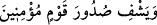

sıkıntılarımdan kurtuldum.” [60]
Rukye, kişinin bir başkasını Allah’a sığındırması, okuması ve o esnâda sığındırdığı
kimseye üflemesidir. Âlimlerin ifâdesine göre Arapça dışında başka bir dil ile rukye
yapılacak olursa ve ne ile yapıldığı bilinmezse bu mekruhtur. Herhalde bu mekruhluk,
içerisinde sihir veya küfür bulunacağı endişesinden dolayı görülmüştür. Buna karşılık
Kur’an-ı Kerim’den birşey okunarak veya duâ ile yapılan rukyede herhangi bir sakınca
yoktur. Nitekim Matrızi’nin eseri el-Muğrib’de bu şekilde ifâde olunmaktadır.
Göz değmesi sâdece insanlara mahsus bir şey değildir. Tam tersine cinler arasında da
göz değmesi vardır. İfâde olunduğuna göre cinlerin gözleri okların sivri uçlarından daha
keskindir.
Ümmü Seleme (r.anhâ)’nın rivâyetine göre Peygamberimiz (s.a.) onun odasında yüzü
sapsarı kesilmiş, hasta bir câriye görür. Onlara, “bu câriyeye rukye yapın, çünkü ona
nazar değmiş” buyurur.[61] Peygamber Efendimiz, burada “nazar” ifâdesiyle cinlerin
nazarını kasdediyordu. Nitekim Şerhu’l-masâbih isimli eserde de böyle yer
almaktadır.han
Bir hadis-i şerifte Peygamber (s.a.) Efendimiz şöyle buyururlar: “Takdir-i ilâhînin
önüne herhangi bir şey geçseydi bu göz olurdu.” [62] Yâni Allah’ın kazasının ve
kaderinin hâricinde herhangi bir helâk edici ya da zarar verici bir şey tasavvur
olunabilseydi bu, göz olurdu. Böylece Peygamberimiz (s.a.), Ümmü Seleme’ye o
câriyeye şiddetli bir şekilde zarar veren şeyin, kendisine isâbet eden nazar olduğunu
beyân etmiş olmaktadır.
Peygamberimiz (s.a.) şöyle buyurur. “Göz insanı kabre, deveyi tencereye koyar.” [63]
Göz değmesine engel olan şeyler vardır. Bunlardan birisi Hz. Osman (r.a.)’dan
rivâyet edilen şu olayda anlatılır: Hz. Osman gürbüz bir çocuk görür ve bu çocuğa nazar
değmemesi için çenesinin çukurunu karartın der.
İfâde edildiğine göre, tarlalara ve üzüm bağlarına hayvan başı kemikleri asılması bu
kabildendir. Sözünü ettiğimiz şeylerin göz değmesine engel oluşları şöyle gerçekleşir:
Kem göz önce o asılan nesnelere isâbet eder. Böylece bu gözün kem bakışı kırılmış
olduğundan daha sonra bakılan şeye etki edemez.
Göz değmesine şifâ olan hususlardan birisi de temiz bir kap içerisinde bulunan suya;
duâsını, “gözünü çevirde bir bak bir bozukluk görebiliyor musun” (el-Mülk, 67/3)
âyetini, Fatiha, Âyetel-Kürsi ve altı şifâ âyetini okuyarak bu suyu hastaya içirmek ve
onunla bütün vücûdunu yıkamaktır.
Sözünü ettiğimiz altı şifâ âyeti şunlardır: